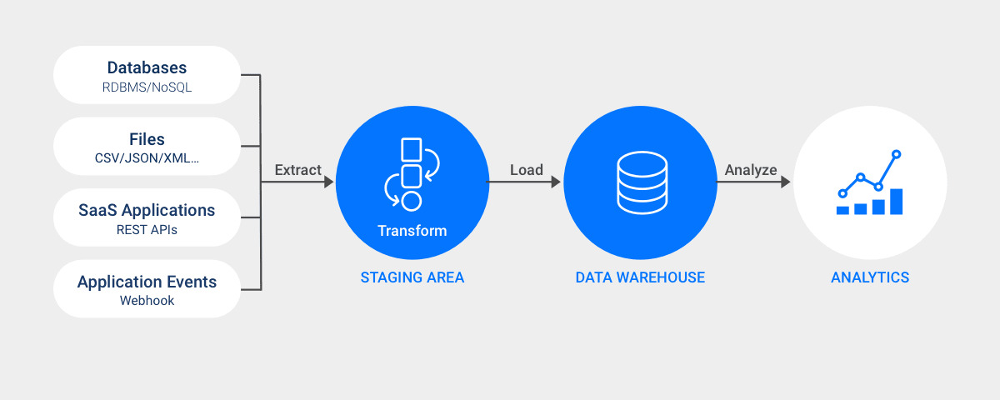
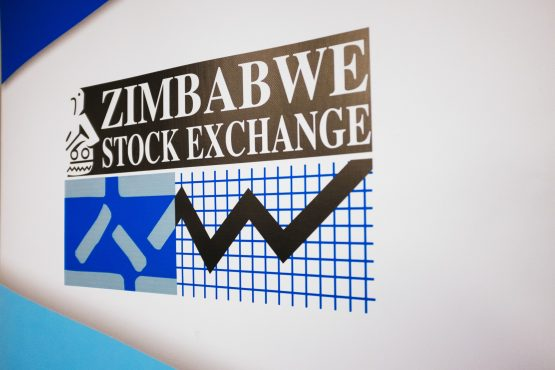
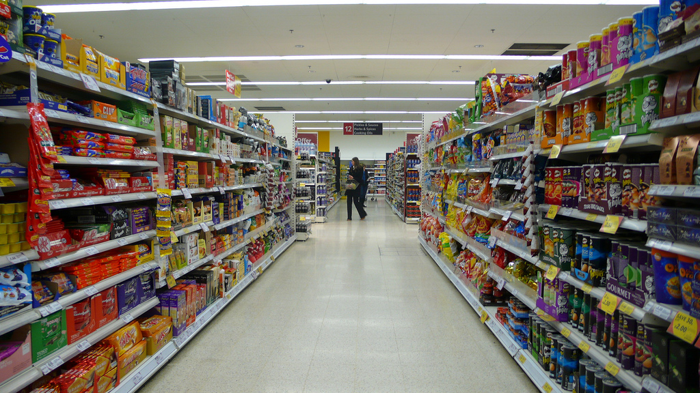
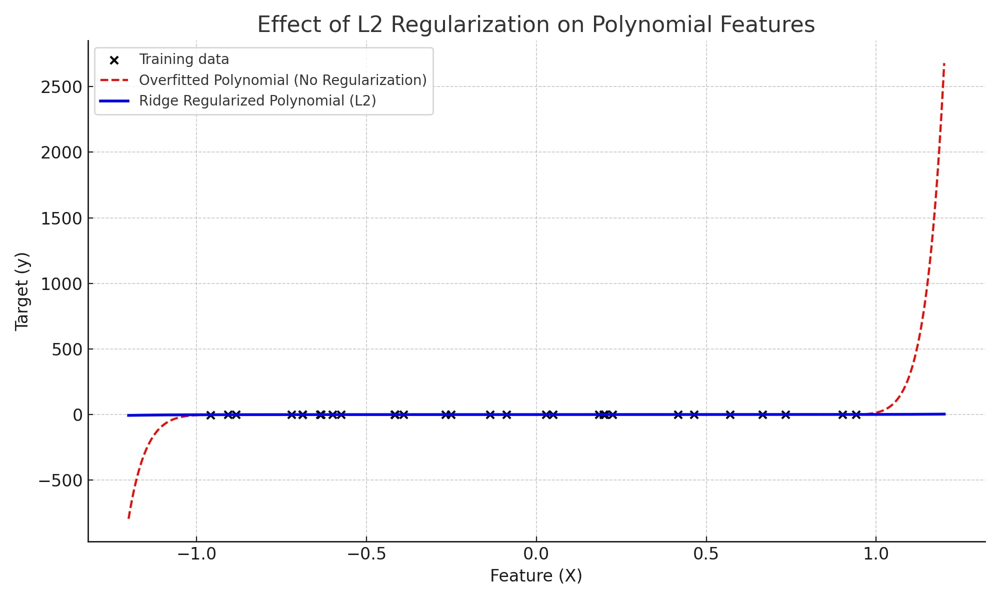

Zimbabwe Housing Market ETL Pipeline
Python web scraper → SQL Server storage → Power BI visualization. Full end-to-end data pipeline for housing market analysis.
View Project →Initializing data_engineer_v2025.sh
5+ years turning data chaos into reliable pipelines, BI systems and ML models. Now building the infrastructure that powers data at scale — ETL, orchestration, warehousing and beyond.
I'm a Senior Data Analyst with 5+ years of experience at Nestlé and Zuva Petroleum, building BI dashboards, automating reports and running ML experiments that directly influenced business strategy.
My foundation is strong: SQL, Python, Power BI, SAP BW and end-to-end ETL work. I've connected data sources, modeled schemas, and delivered dashboards used by C-suite teams.
How I think about end-to-end data infrastructure — from raw ingestion to business insight.

Python web scraper → SQL Server storage → Power BI visualization. Full end-to-end data pipeline for housing market analysis.
View Project →ML-powered Streamlit app — continuation of the ETL pipeline. Scraped data → cleaned → modelled → deployed as interactive app.
View Live App →
Modified RNN solving vanishing gradient via three-gates LSTM architecture on Zimbabwe Stock Exchange data.
View Project →
Deep SQL analysis of shipping costs, profit margins and discount strategies to optimise business operations.
View Project →Logistic Regression, Random Forest and Gradient Boosting on a class-imbalanced financial dataset.
View Project →
Comparative analysis of OLS vs Polynomial Ridge Regression — overfitting, bias-variance tradeoff.
View Project →Model identifying high-risk churners based on historical behavioral patterns. Data source: Kaggle.
View Project →Python notebook analysing Indian state-wise Covid-19 statistics with pandas and matplotlib.
View Project →